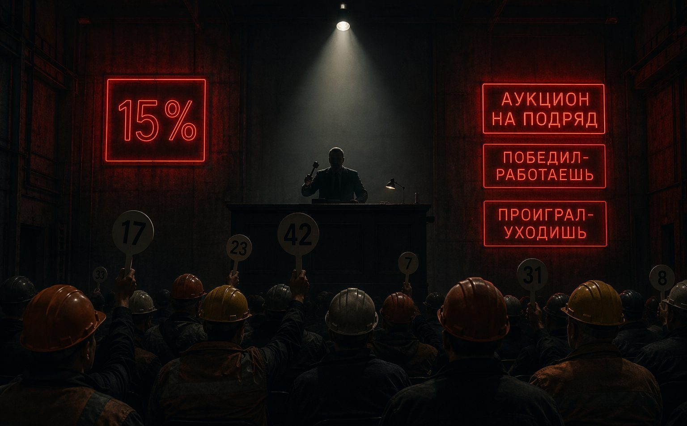

ТЕНДЕР / ДЕМПИНГ = ЛОВУШКА
Скидка 15% на тендере: как оценить риск потери маржи

Расчётная ситуация: подрядчик снизил цену предложения на 15%, рассчитывая компенсировать скидку дополнительными работами. После заключения договора выяснилось, что часть затрат не учтена в смете, а дополнительные объёмы требуют отдельного согласования. До подписания важно проверить состав цены, условия оплаты и финансовый резерв проекта.
Как работает тендерная ловушка
- Генподрядчик объявляет тендер с формулировкой: «Цена — ключевой критерий (70%)»
- Субподрядчики вынуждены снижать цену до себестоимости и ниже
- Победитель — тот, кто предложил самую низкую цену, часто не посчитав расходы
- Генподрядчик подписывает договор на этой цене
- В договоре: «Дополнительные работы только с письменного согласования», «Претензии по качеству — штраф до 10%», «Гарантийное удержание 10% на 3 года»
- Субподрядчик работает в минус, пытается «отыграться на допах», но генподрядчик не согласовывает
- Результат: субподрядчик обанкротился. Генподрядчик находит нового.
Это не строительство. Это конвейер поглощения субподрядчиков.
Расчётный пример: плановая маржа +2 млн ₽ и риск убытка
| Статья | По плану | По факту |
|---|---|---|
| Стоимость работ | 40 млн ₽ | 40 млн ₽ |
| Себестоимость (реальная) | 38 млн ₽ | 42 млн ₽ (перерасход) |
| Дополнительные работы на согласовании | 0 | 5 млн ₽; основание оплаты требует проверки |
| Заявленные штрафы | 0 | 3 млн ₽ — спорная сумма, не тождественная подтверждённому убытку |
| Гарантийное удержание 10%, если предусмотрено договором | 4 млн ₽ — отложенная часть оплаты | Срок и условия возврата проверяются отдельно; удержание не является себестоимостью |
| Разница между ценой и себестоимостью до спорных начислений | +2 млн ₽ | −2 млн ₽ |
4 ошибки, которые ведут в ловушку
- «Скидка 15% — я перебью конкурентов» — если вы перебиваете конкурентов ценой, а не качеством, вы говорите генподрядчику: «Я не умею считать свои расходы».
- «На допах отыграюсь» — допы требуют письменного согласования до начала работ. Без этого — ваши убытки.
- «Тендерные документы — формальность» — в них прописаны условия договора. Вы подписали заявку = согласились с условиями.
- «Задаток по тендеру — мелочь» — 1–5% от цены. Если генподрядчик отказывается от договора — он должен вернуть двойной задаток. Но в договоре прописано: «Генподрядчик вправе отказаться без объяснения причин».
5 правил участия в тендере
- Считайте до цены. Реальная себестоимость + риски (10–15%) + налоги + финансовые издержки + минимальная маржа. Если цена тендера ниже — не участвуйте.
- Читайте тендерные документы как договор. Проверьте: порядок оплаты, гарантийное удержание, порядок согласования допов, штрафы, право расторжения.
- Проверьте механизм обеспечения расчётов. Оцените применимость банковской гарантии, аккредитива и других согласуемых инструментов с учётом условий конкретной сделки.
- Не начинайте без подписанного договора. Никаких «уже начнёте, договор донаберём».
- Зафиксируйте допы ДО начала работ. Письменное уведомление → согласование сметы → только потом работы.
Что делать, если уже попали
- Остановитесь и посчитайте: сколько потратили, сколько ещё потратите, какова реальная прибыль/убыток.
- Зафиксируйте все допы: фото, акты, переписка, письменные уведомления.
- Не подписывайте КС-2 без допов. Или подписывайте с оговоркой.
- Защититесь от штрафов: каждая претензия должна быть в письменной форме, с конкретным описанием, актом обследования, сметой устранения.
- Решение об участии или отказе принимайте после проверки финансовой модели и последствий отказа, включая требования к обеспечению заявки.
ПЛАТНЫЙ КОМПЛЕКТ
Проверка и согласование договора субподряда
Четыре правила из пяти выше — про то, что согласуется до подписания: порядок оплаты, порядок приёмки, гарантийное удержание, штрафы, согласование допов. Здесь образец договора, перечень красных флагов, чек-лист проверки условий и протокол разногласий, которым эти строки меняют. 13 файлов.
24 900 ₽
Купить комплект →Если вы уже подписали и работаете, а спор идёт про допы — нужен другой набор: «Дополнительные работы: как получить оплату», 24 900 ₽. Приказ на дополнительный объём, уведомления, акт скрытых работ, расчёт стоимости, журнал допработ. Комплекты не пересекаются: общих документов у них нет.
БЕСПЛАТНО, ЗА EMAIL
Договор субподряда: красные флаги до подписи
Скидка на торгах отыгрывается условиями договора, который подпишут следом. Чек-лист красных флагов показывает, где именно её отыграют, пока подпись ещё не поставлена.
- Чек-лист красных флагов
- Реестр проверки условий
- Что нельзя подписывать, не показав юристу
- Запрос на корректировку до подписи
- Что делать дальше